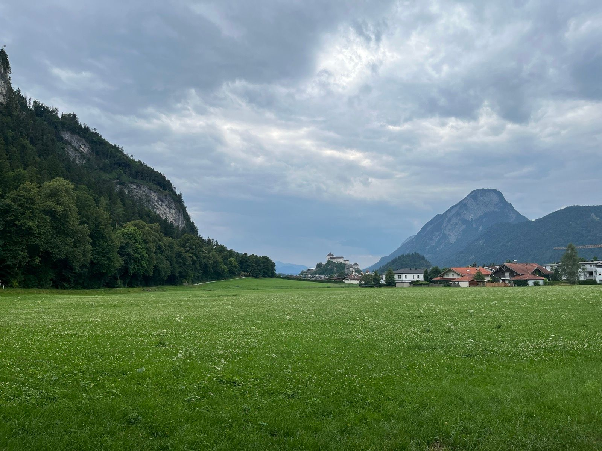
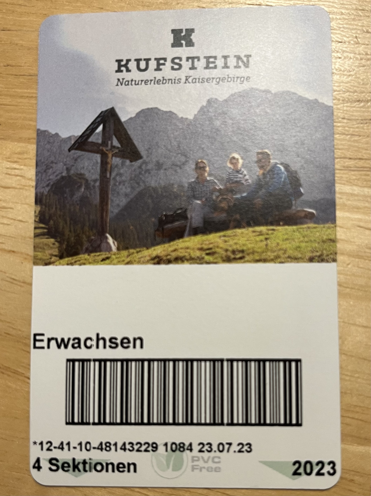
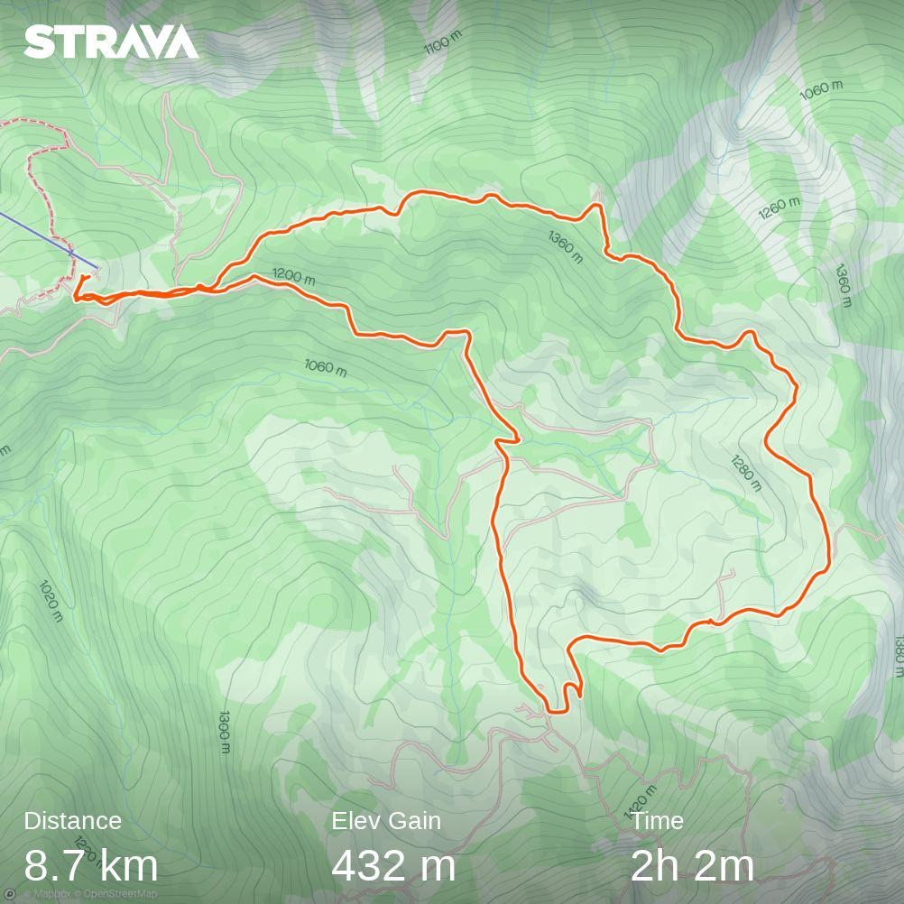
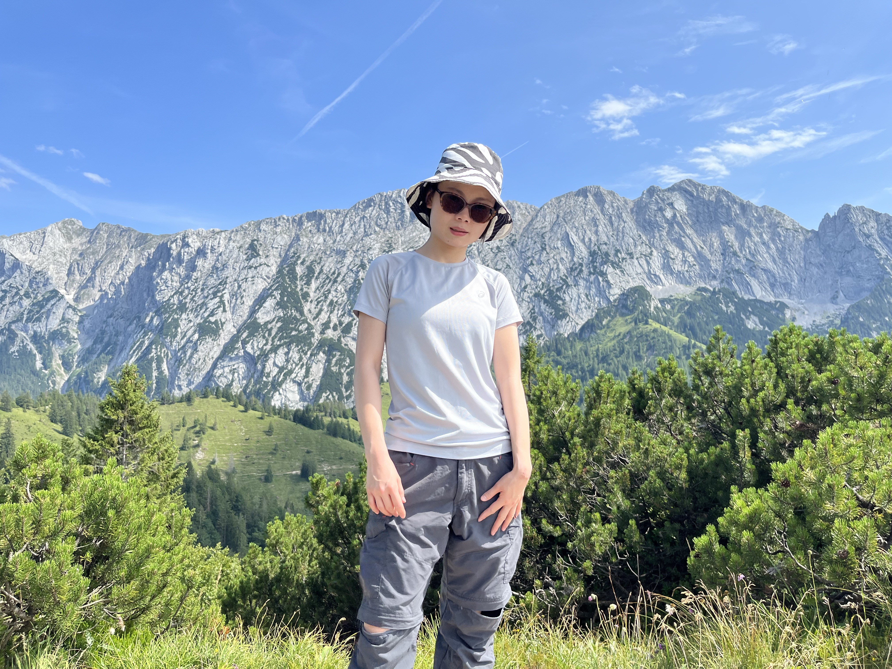
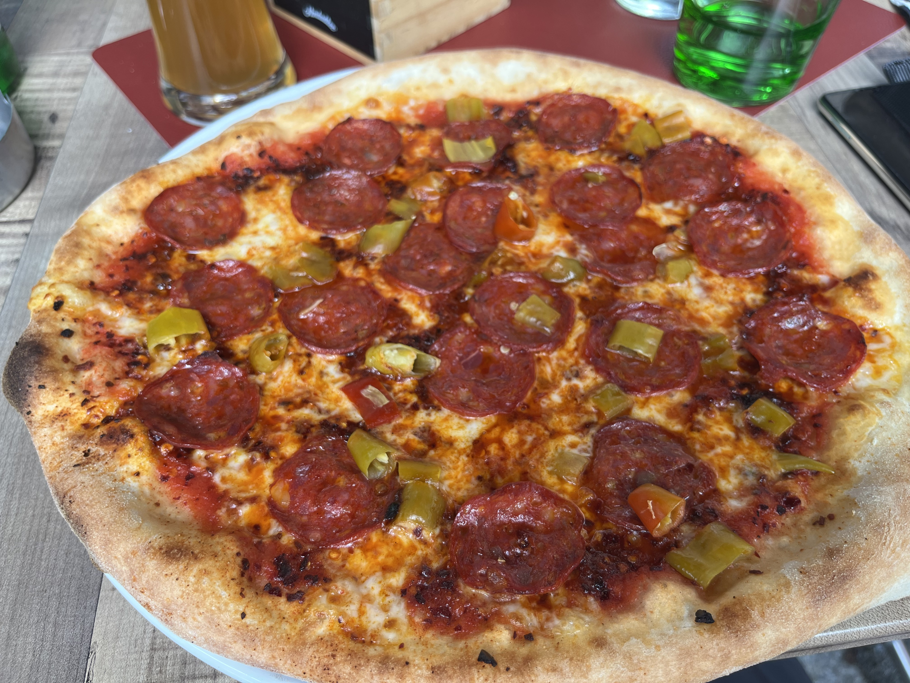
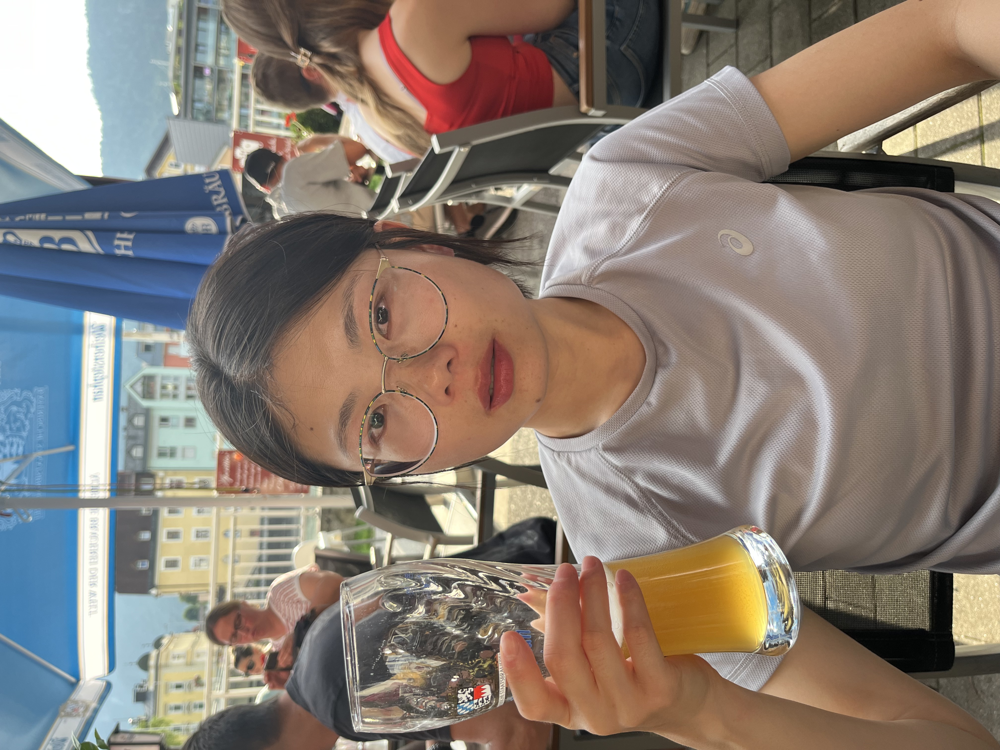

2023 July 23 Kufstein
|  |
|
今天是7月23号星期日，天气晴。我和rzw按照之前的计划打算用德国的49欧月票坐慢车去Austria的Kufstein徒步。
鉴于前一天晚上是两点多才睡，以及rzw秉持着每天必须保证6小时睡眠的传统， 我们决定今天早晨不早于 8:30 起床。于是我定了 8:30 的闹钟，并且这个闹钟不出意外的被我们忽略了。 最后我们在 9 am 挣扎着起床。
虽然起床并不很早，我们依然不慌不忙地准备了丰盛的早饭：煎鸡蛋，胡萝卜蛋糕，以及炸年糕。 当然，必须还有好喝的咖啡。 吃得这么丰盛并不完全是因为我们可以，另外也觉得：如果我们早晨吃得多一些，中午会饿的晚一点（随后事实证明我们想多了）。吃完之后，我们收拾背包，洗漱，排队清空身体。
当然，由于洗漱，清空身体一贯占用时间较长，我们已经错过了9:47 am 从 Munich east 去 Kufstein 的车（RB 54）。 这般车每小时一班，下一班是 10:47 am。我们必须赶上下一班，不然我们就无法完成我们今天的徒步安排了。
因为我们如果赶上 10:47 的火车，到了 Kufstein 站已经是 12:00。之后还得走路 20-30 min 到Kufstein的缆车站， 随后坐到缆车终点（几乎山顶），预计是 1 pm，这个时候我们将开始我们的徒步路线。从山顶的缆车终点站回到山脚的缆车起点站最晚一班次是 4:30pm。 这就表示我们只有 4:30pm - 1 pm = 3h 30 min 的时间来徒步！
所以我们必须赶上 10:47 am 的火车从 ost 到 Kufstein！当然最后我们赶上了！
|  |
|
最终，我们如预期的时间 12:00 左右到的 Kufstein 站，然后徒步到了缆车站 Kaiserlift Kufstein，并购买了两张往返缆车票（一张21欧）。 按时并开心地坐上了稳稳的缆车上山了。一切都如计划安排 - 十分顺利！
大概 1pm，我们开始今天的徒步路线。 并且一开始我们就知道我们只有 3h 30 min 来完成今天的徒步路线，而Komoot对我们制定的路线给出的预计完成时间就是 3h30min。 根据我们以往的徒步经验，我们需要更多时间，也许是 4h 也许是 4h 30 min，也许是 5h，但肯定不是 3h 30 min，这就表示我们今天需要加速了！
在果断的做出这样的判断之后，我们就达成了一致，迅速出发。 随后的事实证明，我们不仅在 3h 30 min 内完成了，甚至是在 3h 内完成的徒步路线，简直就是 mission impossible accomplished。
|  |
|
最后的徒步路线大概是从 Kaiserlift Kufstein -> Kaindlhuette -> Gamskogel -> Kaiserlift Kufstein。 事实证明这是一条绝美的徒步路线，虽然我们没有来得及拍很多照片，但其实我们已经有了很多这条路线上拍过的照片。
没错，因为我们已经走过这条路线！！ 上次虽然走过相同的路线，但是机缘巧合是跟这次的路线反着走的。走着走着我们就想起来，对对对，我们在这里拍过照，我们在这里也拍过照片。 上次来的时候，这家hut还没有开门呢。。。
虽然我们在不记得走过这条路线的情况下，又反方向走了一次。但是这不正证明了它可不是一条绝美的徒步路线嘛！
由于时间问题，我们并没有能够像以前徒步的那样去悠闲地徒步，找到合适的位置疯狂拍照。 我们能做的就是在大口喘气去赶路的时候，看到绝美的背景就迅速停下来有手机去咔擦几张照片， 有的时候 pose 都还没有摆到位，有的时候手机都没有拿稳，但是这些都不重要，因为赶路要紧。
我觉得这是这次徒步的又一大收获，在疯狂赶路的时候，
迅速捕捉下美好的风景和路上的自己 - 因为最后的出片率还是挺高的，虽然当事人之一的 rzw 并不赞同。
|  |
|
 |
|
最后，我们在跳过了午餐，只吃了一些零食的情况下，仅用 3h 完成了这条官方认定 3h 30min 的路线。 我们成功地在缺水的情况下走到了 Kaiserlift Kufstein 排队等待下山的缆车。 当然，我们已经在认真研究山下有什么好吃的，并对下山后想吃啥做出了激烈讨论。
最最后我们选择了一家评分超高的 pizza 店，也吃到了人生中最辣的 pizza，期待明天肚子的抱怨，希望不要太激烈。
|  |
|
|  |
|
未完，待提升补充。。。
未完，待提升补充。。。
未完，待提升补充。。。